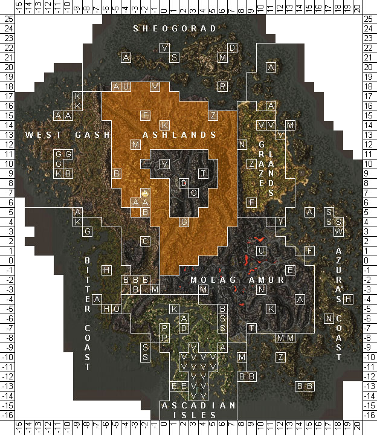
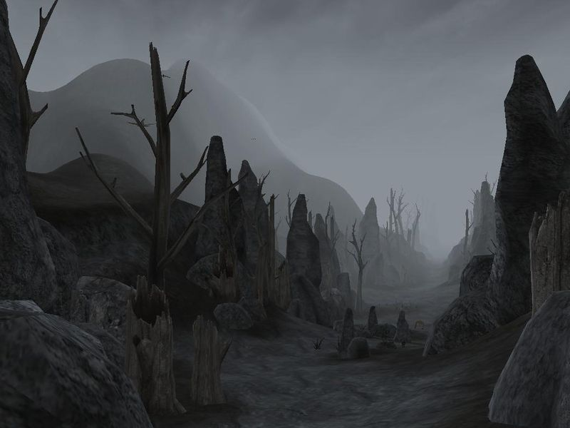
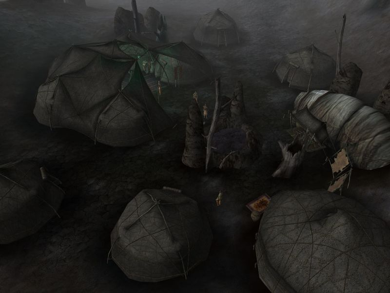

Morrowind:Ashlands
Morrowind: Places
|  Map of the Ashlands |
|
 A foyada in the Ashlands |
 The Redoran city of Ald'ruhn |
|
 The Ashlander camp of the Urshilaku |
The Ashlands region is the largest contiguous geographical region on Vvardenfell—a dry, inhospitable wasteland characterized by clusters of stone obelisks; minimal, highly-adapted vegetation; and bubbling ash mires. It encompasses land from the Urshilaku Camp on the northern shore of the Sea of Ghosts, west to the Redoran Council seat Ald'ruhn, then south to where the slopes of Red Mountain level off into the lava fields of Molag Amur. The southern border runs on an approximate line from Foyada Mamaea, near Balmora, to the southern border of the Grazelands.
The mountainous region to the southeast of Molag Amur is sometimes considered part of the Ashlands because of the similarity of its ecology, but is generally flatter, with open lava flows. Also, the slopes of Red Mountain itself are a separate region, bound by the Ghostfence. Frequent ash storms limit visibility and spread the Blight, affecting almost every creature found in the region.
Only the western part of the Ashlands is under permanent control of House Redoran. The shrine in Maar Gan is an important Temple pilgrimage site, and the village's houses volunteer militia for the fight against the forces of Dagoth Ur. The nomadic Ashlander tribe of the Urshilaku hunt for game, forage, and their herds find sparse grazing around ragged tent villages in the far northwest, but there are small Ashlander camps throughout the area outside the Ghostfence. The rest of the region is embattled with infractions of rogue Telvanni, bandits, and even vampires trying to gain a foothold. The interior of the Ashlands is thus largely devoid of permanent, occupied settlements, with the citadel of Ghostgate being the major exception. This is due to the lack of water and vegetation in the area, as it rarely ever rains. Scattered throughout the land are various caves, eggmines, Daedric and Dwemer ruins, and wizards' towers. Common species of the Ashlands are rats, wild guars, bull and betty netch, alits, kagoutis and the ever-present cliff racers. While the region's soil is too poor for cultivation, tough native species such as trama, fire fern and occasional lichen scratch out a rough existence in the rocky ground and provide valuable substances for the creation of potions.